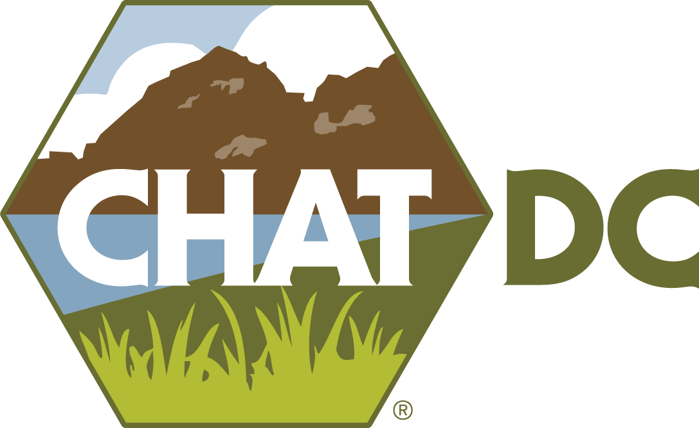
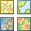
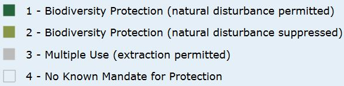
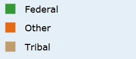
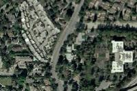

TOOLS
GLOSSARY

Query
Points
Line
Polygon
Circle
Rectangle
Clear
BLM:
United States Bureau of Land Management
CCVI:
Climate Change Vulnerability Index as determined by the NNHP
CHAT:
Crucial Habitat Assessment Tool
GAP:
Gap Analysis Program administered by the USGS
GNIS:
Geographic Names Information System maintained by the USGS
LCM:
Landscape Condition Model developed by NatureServe (2009)
LIQT:
Landscape Integrity Quality Threshold based upon LCM scores that represent at least 80% of PAD Status 1 & 2 areas.
LS Cond:
Landscape condition as modeled by the NatureServe Landscape Condition Model
NHD:
National Hydrography Dataset maintained by the USGS
NNHP:
Nevada Natural Heritage Program
NWI:
National Wetlands Inventory maintained by the USFWS
PAD:
Protected Areas Database maintained by the USGS
S-Rank:
State conservation rank as determined by the NNHP
S1:
Critically Imperilled
S2:
Imperilled
S3:
Vulnerable
S4:
Apparently Secure
S5:
Secure
SOC:
Species of Concern as identified by the Nevada State Wildlife Action Plan (2012)
SERI:
Species of Economic and Recreational Importance
SynthMap:
Nevada Vegetation Synthesis Map developed by the NNHP (2008)
USFWS:
United States Fish & Wildlife Service
USGS:
United States Geological Survey
Wet/Rip:
Wetland and/or riparian habitat
WGA:
Western Governors' Association
WGWC:
Western Governors' Wildlife Council
Crucial Habitat Rank
1
2
3
4
5
6
Most Crucial
Least Crucial
Display
Show/Hide PADUS/GAP Option
Status: PADUS/GAP USGS

Display
Show/Hide Ownership Option
Fed/Tribal/Other: PADUS/GAP USGS

Display
Streets
Topographic

Imagery
Labelled Imagery
Simple Gray


 Circle
Circle Clear
Clear